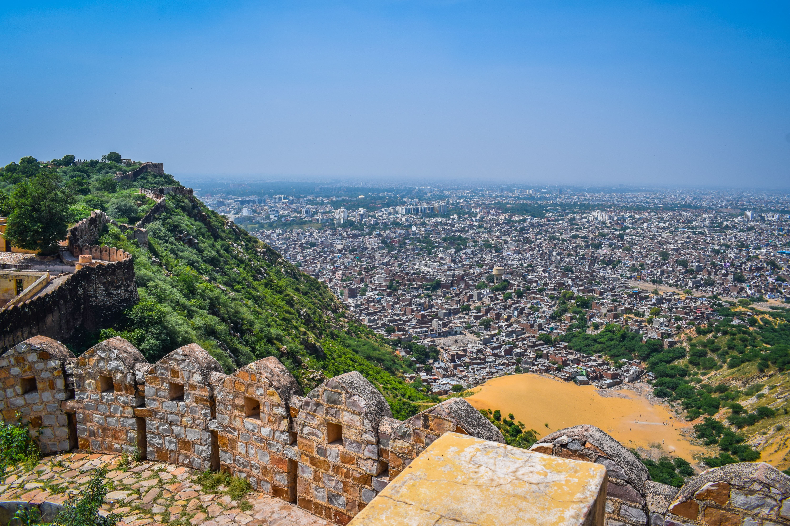
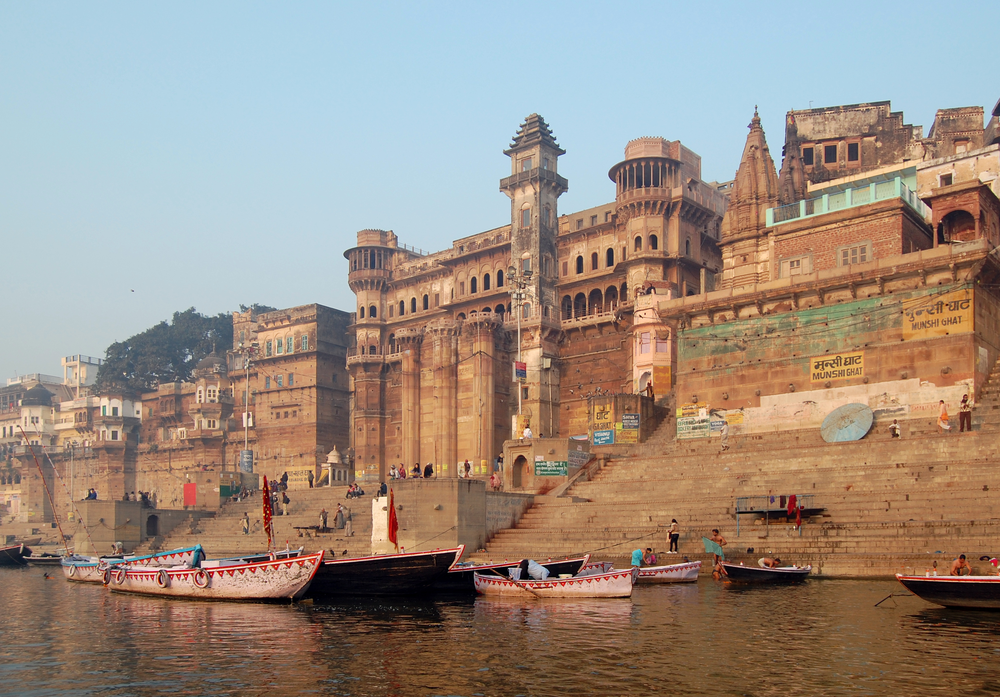

Taj Mahal, Agra
.jpeg)
The Taj Mahal, an ivory-white marble mausoleum on the right bank of the river Yamuna in Agra, is one of the most famous monuments in India. Built by Mughal Emperor Shah Jahan in memory of his beloved wife, it's a testament to love and architectural brilliance.
Jaipur, Rajasthan
Known as the "Pink City," Jaipur is famous for its colorful buildings, vibrant markets, and majestic forts. The city's rich history, stunning architecture, and warm hospitality make it a must-visit destination in India.
Varanasi, Uttar Pradesh
Varanasi, one of the world's oldest continuously inhabited cities, is a spiritual hub situated on the banks of the Ganges River. Known for its ghats, ancient temples, and vibrant Hindu rituals, it offers a unique glimpse into India's spiritual heart.
Goa

Goa, a coastal paradise on India's western coast, is renowned for its beautiful beaches, Portuguese-influenced architecture, and laid-back atmosphere. It's a perfect blend of Indian and Western cultures, offering both relaxation and adventure.
Kerala Backwaters

The Kerala Backwaters are a network of interconnected canals, rivers, lakes, and inlets formed by more than 900 km of waterways. Famous for its serene beauty, houseboat cruises, and lush greenery, it's often called "God's Own Country."
Travel Tips
- Respect local customs and dress modestly
- Try the diverse and delicious Indian cuisine
- Stay hydrated and be cautious with street food
- Book train tickets in advance for long journeys
- Haggle in markets, but do so respectfully